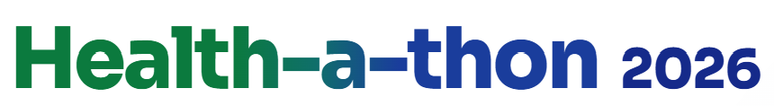

Route it. Ready it. Close it.
How to try it: pick a start below, then tap the buttons in the nurse chat. The hospital phone and the dashboard change as the case moves. Tap Reset to run again.
Open the WhatsApp-style view to see the same case on each person's phone.